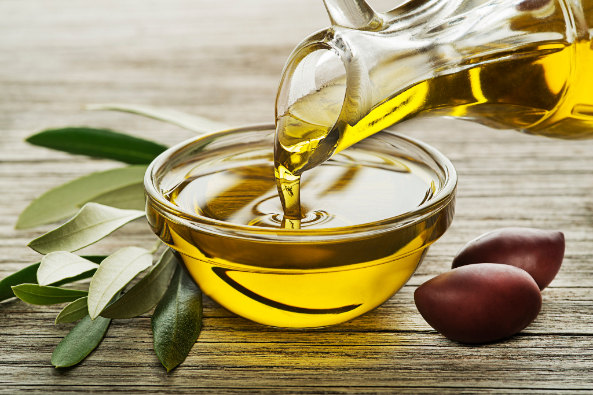

10 причин питаться правильно
«Ты есть то, что ты ешь» — о смысле этой крылатой фразы Гиппократа, как и о прямом влиянии качества питания на здоровье не задумывался разве что совсем равнодушный к своему образу жизни человек. Даже яростные поклонники фастфудов в глубине души осознают, что рацион неплохо бы поменять…
Содержание статьи:
- Принципы здорового питания
- Полезные продукты питания
- Нерекомендуемые продукты
- Калорийность рациона и БЖУ-баланс
- Пример меню на день
- Как привить здоровые пищевые привычки?
При правильном питании улучшается здоровье.
Почему стоит начать правильно питаться прямо сейчас:
- Заряд энергии
- Состояние кожи
- как кожа младенца
- Борьба с депрессией
- настроение без перепадов и резких скачков
- Поддержка иммунной системы
- Борьба со свободными радикалами, и экономии денег в кармане
- Отличное самочувствие
- Быстрое восстановление организма
- Восстановление сна
- Забота о сердце
- Прекращение голодовок
- Сила разума
10 самых полезных продуктов питания для здоровья
Рыба
Морская рыба содержит в себе рекордное количество Омега-3, Омега-6 и железа. Эти элементы помогают нормализовать холестерин, снизить риск инфаркта, участвуют в гемопоэзе, улучшают состояние волос, предупреждают потерю памяти и даже некоторые виды онкологических заболеваний. Рыба так же как и мясо содержит белки, жиры и минеральные вещества, но усваивается организмом легче. Особенно полезным считается лосось, в нем содержится максимальное количество полезных веществ. Далее по списку идут тунец, скумбрия и сельдь — свыше 8% жира. Их стоит употреблять 1–2 раза в неделю.
Чеснок
В состав чеснока входят важные вещества — калий, кальций, фосфор, витамины группы В и С, селен, марганец, йод и эфирные масла. Целебные свойства продукта:
- поддерживает работу иммунной системы и мозга;
- помогает избавиться от болезнетворной микрофлоры в кишечнике;
- улучшает пищеварение и ускоряет обменные процессы;
- снижает уровень плохого холестерина, предупреждает образование тромбов и инфаркта;
- предотвращает развитие рака, выводя из организма свободные радикалы, которые провоцируют неправильное развитие клеток;
- помогает при болезнях печени и желчного пузыря — разжижает желчь, тем самым предотвращая образование камней;
- помогает при болезнях печени и желчного пузыря — разжижает желчь, тем самым предотвращая образование камней;
- используется как способ профилактики и лечения гельминтозов у детей.
Зеленый чай
Зеленый чай — лидер в топ самых полезных и продуктов питания. Это объясняется высоким содержанием сильных природных антиоксидантов — полифенолов. Особой разновидностью этого вещества являются катехины, входящие в состав зеленого чая. Они выводят свободные радикалы, влияющие на клетки и являющиеся причиной болезней и старения организма. Также в состав полезного напитка входят витамины А, С, В, К, Р, F и микроэлементы. Они улучшают здоровье волос, кожи, работу нервной системы, регулируют уровень сахара в крови и укрепляют сосуды, помогают функционированию почек и обмену веществ. 20 видов аминокислот и глютаминовая кислота стимулируют работу мозга и восстанавливают нервную систему. Кофеин и L-теанин тонизируют, а теобромин помогает похудеть, оказывая мочегонное действие.
Aвокадо
Мякоть плода содержит множество минералов (кальций, фосфор, железо, йод и другие), витаминов (группы В, Е, А, F, С, фолиевая кислота), клетчатки и насыщенных жиров. Авокадо ускоряет усвояемость питательных веществ, нормализует вес, снижает уровень холестерина и сахара в крови, благодаря ненасыщенным жирным кислотам. Этот продукт рекомендован людям с заболеваниями сердечно-сосудистой системы и ЖКТ. Из-за высокого содержания клетчатки плод особенно полезен тем, у кого есть предрасположенность к запорам, так как пищевые волокна улучшают состояние кишечника и являются питательной средой для полезных бактерий.
Морковь
Это уникальный овощ, который является источником ценных питательных веществ. Основные компоненты, которые содержатся в моркови и позволяют организму быть здоровым:
<>Бобовые
В фасоли, горохе и чечевице содержится большое количество растительного белка, поэтому они вошли в 10 самых полезных продуктов для здоровья человека. Применение бобов в пищу помогает нормализовать уровень холестерина и снизить кровяное давление. Блюда из этого продукта подходят для профилактики болезней сердца, диабета, остеопороза. Также они эффективно очищают организм и стимулируют работу кишечника, быстро утоляют голод и придают энергии. Бобовые культуры богаты витаминами В и А, углеводами и белками, содержат много клетчатки. Такой состав помогает улучшить состояние костных тканей, улучшает гормональный фон, замедляет процессы старения, способствует улучшению мозговой активности.
Фрукты
- Яблоко
- Этот фрукт помогает наладить перистальтику кишечника и вывести токсины из организма. Благодаря содержанию витамина А, С, В1, В2, РР и Е, а также магния, фосфора, йода, железа, кальция и цинка, укрепляют сердечно-сосудистую систему и улучшают работу мозга.
- Хурма
- Хурма способствует пищеварению, повышает эластичность сосудов, улучшает зрение, поддерживает иммунитет, обеспечивает организм кальцием, предотвращает анемию. В ней содержатся витамины А, С, Е, В6, калий, медь, магний.
- Апельсин
- Кроме того, что это вкусный и ароматный плод, он еще богат витаминами, бета-каротином, фолиевой кислотой и минеральными веществами, которые необходимы организму человека. К основным полезным свойствам относятся:
- Киви
- Один плод насыщает организм человека суточной дозой витамина С. В состав входит филлохинон — улучшает свертываемость крови и синтез белков. Киви обогащен железом, цинком, калием, магнием, натрием и фосфором — они помогают укрепить иммунитет, борются с простудными заболеваниями, увеличивают стрессоустойчивость организма. Также употребления этой ягоды снижает риск развития онкологических заболеваний и улучшает работу мочевыделительной системы.
- Банан
- В одном банане содержится примерно 13% необходимой суточной дозы калия. Этот минерал не позволяет образовываться камням в почках, нормализует работу сердца и кровяное давление. Бета-каротин, кальций и калий нормализуют работу кишечника и сердечной системы, уменьшает уровень «плохого» холестерина. Бананы снижают уровень стресса, являются натуральным антидепрессантом, борются с сезонной депрессией и плохим настроением. Серотонин и допамин помогают успокоиться после нервного срыва или тяжелого дня.
- Гранат
- Фрукт повышает иммунитет и защищает от вирусов и простудных заболеваний. Имеет противобактерицидное и противовоспалительное действие, выводит из организма радиоактивные вещества и токсины, эффективен при профилактике туберкулеза. Повышает гемоглобин, улучшает функции щитовидной железы. Гранат содержит растительный гормон эстроген, поэтому он особенно полезен женщинам в период климакса. Также плод полезен для волос и кожи, витамины и микроэлементы помогают заботиться о красоте и молодости.
Орехи
Самыми полезными считаются:
- кешью — помогает усвоению минералов и витаминов;
- грецкий орех — в составе есть витамин Е, полифенол и Омега-3, способствующие концентрации внимания, уменьшению тревоги и улучшению памяти;
- арахис — в нем много витаминов группы В, которые понижают давление, помогают работе нервной системы, обеспечивают рост и деление клеток;
- кедр — магний и фосфор укрепляют кости, цинк улучшает работу иммунной системы, витамин Е защищает организм на уровне клеток;
- кедр — магний и фосфор укрепляют кости, цинк улучшает работу иммунной системы, витамин Е защищает организм на уровне клеток;
- фундук — в 50 граммах содержится 85% суточной нормы магния, необходимой для улучшения мыслительных способностей и нормализации сна;
- бразильский орех — исследователи подтвердили, что для снижения риска развития болезни Альцгеймера нужно регулярно употреблять 50 грамм этих орехов.
- фисташки — богаты клетчаткой и аминокислотами, которые полезны для кишечника и организма в целом;
- макадамия — в составе много ненасыщенных жиров, они улучшают работу сердечно-сосудистой системы, укрепляют сосуды и снижают уровень холестерина.
Молочные продукты
Молочная продукция содержит нужные организму человека компоненты — белки и аминокислоты. В состав, также входит кальций и фосфор, помогающие восстановить костную ткань и клетки крови. Организмом легко усваивается молочный белок, который участвует в синтезе гормонов и ферментов. Молоко уменьшает воздействие токсичных веществ на организм. Кефир борется с проблемами почек и печени, хорошо подходит при гастрите. Стакан этого продукта на ночь поможет побороть бессонницу. Он приводит в норму кислотный баланс и микрофлору кишечника, укрепляет иммунитет. Творог богат белками, витаминами и фолиевой кислотой, кальцием, железом, цинком и другими минералами необходимыми для бесперебойной работы организма. Это вкусный продукт, который помогает поддерживать уровень железа, необходимый для здоровья женщин. Помогает выработке тестостерона, гормона, необходимого мужчинам.
Оливковое масло
Мононенасыщенные жиры, которые входят в состав оливкового масла снижают воспаления и применяются при профилактике раковых заболеваний. Олеокантал — еще один антиоксидант, которым насыщено оливковое масло. Оно уменьшает уменьшает воспаление, которое может стать причиной развития артрита и диабета. Масло снижает риск развития диабета, помогает предотвратить инсульт, помогает похудеть и имеет свойство подавлять вредные бактерии, вызывающие язву желудка. Если правильно совмещать все вышеперечисленные продукты в ежедневном рационе, можно обеспечить свой организм необходимым ему набором полезных веществ. Это лучший способ укрепить здоровье, сохранить молодость и красоту.
БУДЬТЕ ЗДОРОВЫ
а главное: Не бухай... Ну ладно, шучу, можно, только осторожно: